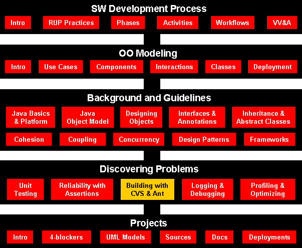

Software development is full of best practices which are often talked about but seem to be rarely done.
The task of tracking and controlling changes in the software. Configuration management practices include revision control and the establishment of baselines.
Generally, a baseline may be a single work product, or set of work products that can be used as a logical basis for comparison. A baseline may also be established (whose work products meet certain criteria) as the basis for subsequent select activities.
The Concurrent Versions System (CVS), also known as the Concurrent Versioning System, implements a version control system: it keeps track of all work and all changes in a set of files, typically the implementation of a software project, and allows several (potentially widely separated) developers to collaborate. CVS utilizes a client-server architecture: a server stores the current version(s) of the project and its history, and clients connect to the server in order to check-out a complete copy of the project, work on this copy and then later check-in their changes. Typically, client and server connect over a LAN or over the Internet, but client and server may both run on the same machine if CVS has the task of keeping track of the version history of a project with only local developers.
Ant is a powerful scripting tool that lets you craft build processes around your code requirements using predefined tasks and provides expansion capability to handle even more difficult tasks. Ant is the powerful XML-based scripting tool that can automate your mundane tasks and allow you to concentrate on your business rules and code development. It is by nature an overhead task that accompanies a development effort. A defined build process ensures that the software in your development project is built in the exact same manner each time a build is executed. As the build process becomes more complex -- for example, with EJB builds or additional tasks -- it becomes more necessary to achieve such standardization. You should establish, document, and automate the exact series of steps as much as possible.
Jenkins is an open source continuous integration tool written in Java.
Jenkins provides continuous integration services for software development. It is a server-based system running in a servlet container such as Apache Tomcat. It supports SCM tools including CVS, Subversion, Git, Mercurial, Perforce and Clearcase, and can execute Apache Ant and Apache Maven based projects as well as arbitrary shell scripts and Windows batch commands.
Builds can be started by various means, including being triggered by commit in a version control system, scheduling via a cron-like mechanism, building when other builds have completed, and by requesting a specific build URL.
The process of an automated build-and-test cycle is continuous integration.
It works by having an integration server check out code from the version control
system at set time intervals, or at certain times of the day, build that code,
run unit tests on the build, and report back build or test results to
developers. By providing early build and test reports, developers can fix
problems quickly, allowing the project to move forward in an agile fashion: Such
failures will not block the progress of the team for long.

A CVS directory locations for the project prj_name:
That is the directory we will use in this example:
Let's know examine the above commands:# cd prj_name # mkdir cvsroot # chgrp cvsdev cvsroot # ls -l total 2 drwxr-xr-x 2 root cvsdev 512 Jun 28 16:12 cvsroot # chmod g+srwx cvsroot # ls -l total 2 drwxrwsr-x 2 root cvsdev 512 Jun 28 16:12 cvsroot # cvs -d prj_name/cvsroot init # ls -la cvsroot total 6 drwxrwsr-x 3 root cvsdev 512 Jun 28 16:12 . drwxr-xr-x 3 root other 512 Jun 18 12:24 .. drwxrwsr-x 3 root cvsdev 1024 Jun 28 16:13 CVSROOT # chown -R cvs cvsroot # ls -l total 2 drwxrwsr-x 3 cvs cvsdev 512 Jun 23 16:12 cvsroot# setenv CVSROOT prj_name/cvsroot
where prj_name is a descriptive name for the project vendor_name can be anything, and initial is what we use to tag the initial set of sources. If everything worked OK, then you can remove the original sources. (Don't try to check-out the repository sources into the original source directory as this usually causes endless problems.)cd prj_name cvs import -d prj_name vendor_name initial
which will create a sub-directory named prj_name with the sources and each directory will have a sub-directory named CVS that contains info about the repository sources. Once you've checked-out the sources, you do not need to define $CVSROOT to work within the local sources. All the cvs commands will work, if they're invoked within the local source directories, and it's local host access.cd sandbox_dir cvs co -P prj_name
where you can give one or more optional source_file names, else cvs will compare all files in the current directory and all subdirectories.cvs diff [source_file]
However, be aware that this will not give any information about changes between the local source file and any changes that have been checked in by others. Only changes that have been made to the local source file and it's original source.
cvs log [source_file]
A couple of useful C-shell aliases to create are:cvs status [source_file]
alias cvsstat 'cvs status \!* |& grep Status:'
alias cvswhat 'cvs status \!* |& grep Status: |& grep -v "to-date"'
rm source_file # must first remove it locally cvs rm source_file # schedules it for removal
vi source_file # create the file first cvs add source_file # schedules it to be added
cvs ci [source_file] or cvs commit [source_file]which checks-in the changes and updates the repository sources. CVS will pop-up an editor session where you can describe the changes made, which appears in the source_file log for each file affected.
and if there are conflicts, then CVS will notify you and flag it in the sources. On the Crays, I've noticed that CVS can't use the ``patch'' facility hence it will default to copying, which is not a problem, so ignore such messages.cvs update [source_file]
then this set of local sources can be recovered with this tag_namecvs tag tag_name
Another option is to tag the repository sources with
which you want to do for each release of the code, so you can always backtrack any bugs to the version released to the users.cvs rtag tag_name prj_name
which will have all the changes you've made between the tag_name version and the initial version. You can also create patch files between any two tags.cvs rdiff -u -r tag_name -r initial prj_name > patch_file
You can also create a patch file of your local changes with:
cvs diff -N -u -r tag_name > patch_file
rm source_file # remove it from local sources cvs update source_file # get a new copy from the repository
The concept is that the software project has made a release, say version 3.1.0, and work is now progressing on version 3.2. However, a bug was discovered in the released 3.1.0 version, which you want to fix. Suppose that the project was tagged with prj_3_1_0. Also, it will be assumed that it wasn't marked as a branch (-b).
cvs rtag -b -r prj_3_1_0 prj_3_1_0_branch project_name
cvs checkout -d prj.3.1.0 -r prg_3_1_0_branch project_name
cvs commit
cvs tag -r prj_3_1_1
Carefully, note the output, and resolve any conflicts, and test changes.cvs update -j prj_3_1_1
Generally, what happens when a tagged version is checked out:
Something in the CVS directories makes the tag ``sticky'' and no changes can be updated or checked in. An attempt to cvs commit any local changes usually results in a message saying the ``sticky'' tag is not a branch!cvs checkout -d prj.3.1.0 -r prg_3_1_0 project_name
Where the -b is the key here to making a branch.cvs tag -b -r prj_3_1_0 prj_3_1_0_branch
This will not affect the source files, only the CVS/Entries files will be updated to a different ``sticky'' tag ... a branch in this case.cvs update -r prj_3_1_0_branch
cvs commit
Normally, it's best to edit files in the directory that you're using for
checkouts. This way, cvs will automatically take care of merging in changes,
just by running cvs update. However, in some cases that might not
always be possible.
Hypothetical Situation: you took a copy of Myfile.java
home, and did some work on it. In the meantime, your fellow developers have
committed changes to the file. The dilemna - you'd like to incorporate what
you've done, but your copy of the file is now out of date. Of course, you also
don't want to undo work that others have done. Here's a way to deal with this
situation.
$Id$ or $Revision$
tags. If you can't determine the revision, this approach won't work, and
you'll need to do a manual merge.
cvs update to refresh your repository copy.
cvs log MyFile.java (in the appropriate directory) to
get the revision number of the copy that you just checked out of the
repository.
For the sake of illustration, lets say that the copy of MyFile.java
that you were working on at home is revision 1.6, and the current repository
version is 1.10.
Copy the MyFile.java that you worked on at home to your checkout
directory. We now have the following arrangement:
To pick up the modifications made from 1.7 - 1.10, you need to merge:
cvs update -j 1.7 -j 1.10 MyFile.java
In cvs-speak, this means "take the changes from revision 1.7 through revision 1.10, and apply them to the local copy of the file." Assuming that there were no merge conflicts, examine the results:
cvs diff -w MyFile.java
Make sure it compiles, then commit.
If things didn't go well, you'll need to examine the results and resolve any conflicts that happened as a result of the merge.
On a related note, update -j ... can also be used to
back out a bad commit, simply by reversing the revision
order.
Eventually, something like this will happen:
$ cvs commit foo.java cvs commit: Up-to-date check failed for `foo.java' cvs [commit aborted]: correct above errors first!
Here, you've made changes to the foo.java, but someone else has already committed a new version to the repository (eg - the repository version has a higher number than your local copy). Before you can commit the file, you'll need to update your working copy.
If you and the other developer were working on different areas of the file, cvs is pretty intelligent about merging the changes together; it might see that the last set of modifications are in lines 75-100, and your changes are in lines 12-36. In this situation, the file can be patched and your work is unaffected.
However, if the two of you changed the same area of the file it's possible to have conflicts:
$ cvs update foo.java RCS file: /home/srevilak/c/mymodule/foo.java,v retrieving revision 1.1 retrieving revision 1.2 Merging differences between 1.1 and 1.2 into foo.java rcsmerge: warning: conflicts during merge cvs update: conflicts found in foo.java C foo.java
Oh dear! What do we do now? The answer is "fix the merge". Two things have been done to help you with this.
$ ls -a .#* 1 .#foo.java.1.1However, being a dotfile, it's presence isn't immediately obvious
<<<<<<< foo.java static final int MYCONST = 3; ======= static final int MYCONST = 2; >>>>>>> 1.2
The conflict lies between the rows of greater than and less than signs. The thing to do now is decide what version is right, remove the conflict markers, and commit the file.
Let's suppose that you've commited a file, but this ended up breaking something horribly. Here's how to undo your commit:
Now do this:
cvs update -j 1.5 -j 1.4 filename cvs commit filename
The above is an example of a merge. You've asked cvs to take the difference between versions 1.5 and 1.4 and apply them to your working copy. The ordering of version numbers is significant - think of it as removing changes, or going backward in version history.
There are a variety of other useful cvs commands. Here are a few examples:
| cvs diff filename | Shows differences between your local copy of filename and the current repository copy |
| cvs diff -r 1.2 filename | Shows differences between your local copy of filename and version 1.2 of filename. |
| cvs diff -r 1.2 -r 1.3 filename | Shows differences between versions 1.2 and 1.3. (regardless of what version your local copy is). |
| cvs log filename | Show the commit log for filename (like rlog does with rcs). |
| cvs annotate filename | Shows each line of filename, prefixed with the version number where the line was added, and the name of the person who added it. Useful for seeing who made a particular set of changes. |
cvs --help # usage info and general cvs-options cvs --help-commands # list & description of commands cvs --help-options # general cvs-options cvs --help command # command specific usage & command options
man cvs # gives an overview
Why do I need a defined build process?
Here are some useful tasks that are built in the Ant distribution.
| Command | Description |
|---|---|
| Ant | Used to execute another ant process from within the current one. |
| Copydir | Used to copy an entire directory. |
| Copyfile | Used to copy a single file. |
| Cvs | Handles packages/modules retrieved from a CVS repository. |
| Delete | Deletes either a single file or all files in a specified directory and its sub-directories. |
| Deltree | Deletes a directory with all its files and subdirectories. |
| Exec | Executes a system command. When the os attribute is specified, then the command is only executed when Ant is run on one of the specified operating systems. |
| Get | Gets a file from an URL. |
| Jar | Jars a set of files. |
| Java | Executes a Java class within the running (Ant) VM or forks another VM if specified. |
| Javac | Compiles a source tree within the running (Ant) VM. |
| Javadoc/Javadoc2 | Generates code documentation using the javadoc tool. |
| Mkdir | Makes a directory. |
| Property | Sets a property (by name and value), or set of properties (from file or resource) in the project. |
| Rmic | Runs the rmic compiler for a certain class. |
| Tstamp | Sets the DSTAMP, TSTAMP, and TODAY properties in the current project. |
| Style | Processes a set of documents via XSLT. |
While other tools are available for doing software builds, Ant is easy to use and can be mastered within minutes. In addition, Ant lets you create expanded functionality by extending some of its classes.
1) Download Ant from the Apache Ant Project at http://ant.apache.org/
The binary distribution of Ant consists of the following directory layout:
ant
+--- bin // contains launcher scripts
|
+--- lib // contains Ant jars plus necessary dependencies
|
+--- docs // contains documentation
| +--- ant2 // a brief description of ant2 requirements
| |
| +--- images // various logos for html documentation
| |
| +--- manual // Ant documentation (a must read ;-)
|
+--- etc // contains xsl goodies to:
// - create an enhanced report from xml output of various tasks.
// - migrate your build files and get rid of 'deprecated' warning
// - ... and more ;-)
Only the bin and lib directories are required to
run Ant. To install Ant, choose a directory and copy the distribution file
there. This directory will be known as ANT_HOME
Before you can run ant there is some additional set up you will need to do:
bin directory to your path (use %ANT_HOME%\bin
on windows or $ANT_HOME/bin on unix).
ANT_HOME environment variable to the directory
where you installed Ant. On some operating systems the ant wrapper
scripts can guess ANT_HOME (Unix dialects and Windows
NT/2000) - but it is better to not rely on this behavior.
JAVA_HOME environment variable .
Example Scenario
This example scenario should help show you the value of Ant and provide
insight into its benefits and how you can use it.
Simple build process with Ant (build.xml)
<project name="Greeter" default="compile" basedir="C:\java-cs3365\ass1" >
<target name="init">
<property name="source" value="src" />
<property name="package0" value="edu\ttu\cs\greeter" />
<property name="package1" value="greeters" />
<property name="package2" value="greet" />
<property name="outputDir" value="classes" />
<property name="classpath" value="classes" />
</target >
<target name="clean" depends="init">
<deltree dir="${outputDir}" />
</target >
<target name="prepare" depends="clean">
<mkdir dir="${outputDir}" />
</target >
<target name="compile" depends="prepare" >
<ant antfile="${source}\${package0}\build.xml" />
<ant antfile="${source}\${package1}\build.xml" />
<ant antfile="${source}\${package2}\build.xml" />
</target >
</project >
The first line contains information about the overall project that is to be built.
<project name="Greeter" default="compile" basedir="C:\java-cs3365\ass1" >
The most important attributes of the project line are the default
and the basedir.
The default attribute references the default target that is
to be executed. Because Ant is a command-line build tool, it is possible to
execute only a subset of the target steps in the Ant file. For example, You
could perform the following command:
% ant init
That will execute the ant command and run through the build.xml file until the init target is reached. So, in this
example, the default is compile.
The Ant process invoked in the
following line will run through the test.xml file until the
default task is reached:
% ant -buildfile test.xml
% ant -f test.xml
The basedir attribute is fairly self-explanatory as it is
the base directory from which the relative references contained in the build
file are retrieved. Each project can have only one basedir
attribute so you can choose to either include the fully qualified directory
location or break the large project file into smaller project files with
different basedir attributes.
The next line of interest is the target line. Two different versions are
shown here:
<target name="init">
<target name="clean" depends="init">
The target element contains four attributes: name,
if, unless, and depends. Ant requires
the name attribute, but the other three attributes are
optional.
Using depends, you can stack the Ant tasks so that a
dependent task is not initiated until the task that it depends on is
completed. In the above example, the clean task will not start until the
init task has completed. The depends attribute may
also contain a list of comma-separated values indicating several tasks that
the task in discussion depends on.
The if and unless tasks let you specify
commands that are to be performed either if a certain property is
set or unless that property is set. The if will
execute when the property value is set, and the unless will
execute if the value is not set. You can use the available
task to set those properties as shown below:
<available classname="org.whatever.Myclass" property="Myclass.present"/>
sets the Myclass.present property to the value "true" if the class
org.whatever.Myclass is found in the classpath.
The init target from the simple example contains four lines
of property commands as shown here:
<property name="sourceDir" value="src" />
These property lines let you specify commonly used
directories or files. A property is a simple name value pair that allows you
to refer to the directory or file as a logical entity rather than a physical
one.
If you wanted to reference the sourceDir variable later in
the Ant file, you could simply use the following syntax to alert Ant to
obtain the value for this tag: ${sourceDir}.
Two other commands present in the above buildfile are:
<deltree dir="${ outputDir }" />
<mkdir dir="${ outputDir }" />
outputDir (or classes directory when
dereferenced as mentioned above). The first command removes the entire tree
contained under the outputDir. The second command creates the
directory again.
The last line of major interest to the developer is the following
compilation line:
<javac srcdir="${sourceDir}" destdir="${outputDir}"
/>
javac command requires a source directory (the input
location of the .java files) and a destination directory (the output
location of the .classes file). It is important to note that all directories
must either exist prior to the running of the ant command or be
created using the mkdir command. Ant does not create
directories based upon intuition, so you must create the outputDir,
using the mkdir command prior to the compilation step above.
While it took several lines to explain the example, it should be evident that Ant is an easy-to-use tool. Using this buildfile as a starting point, you should be able to incorporate Ant into your development effort.
More: Continuous Integration
Reference